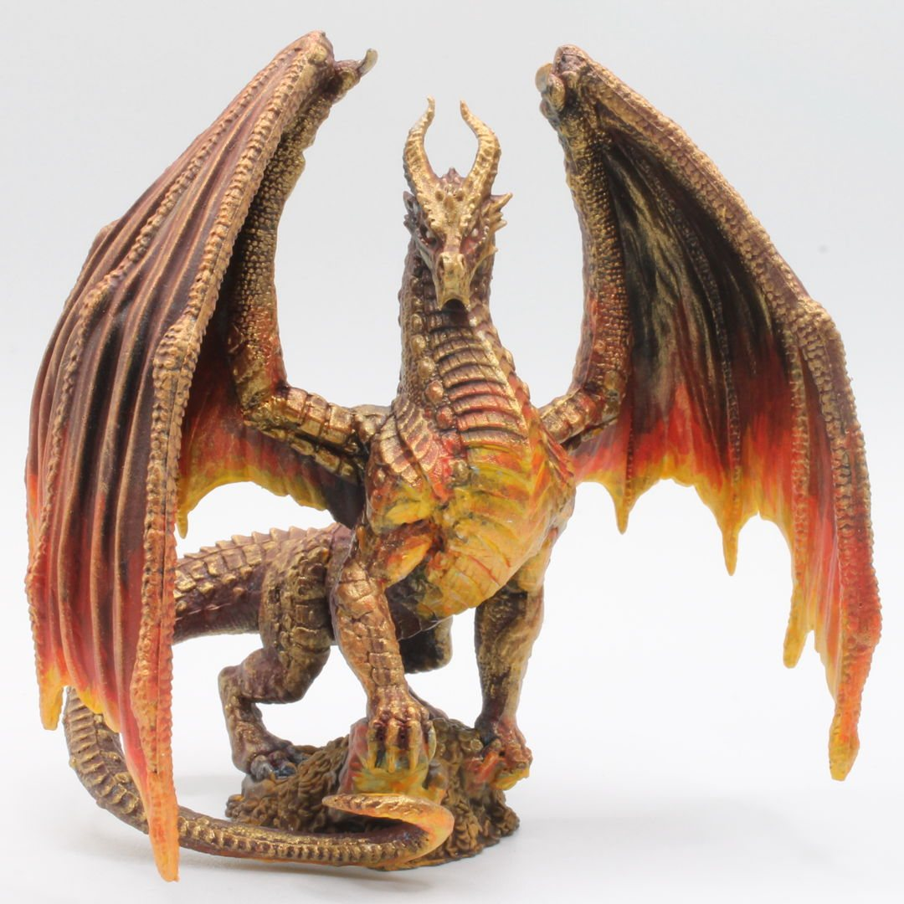
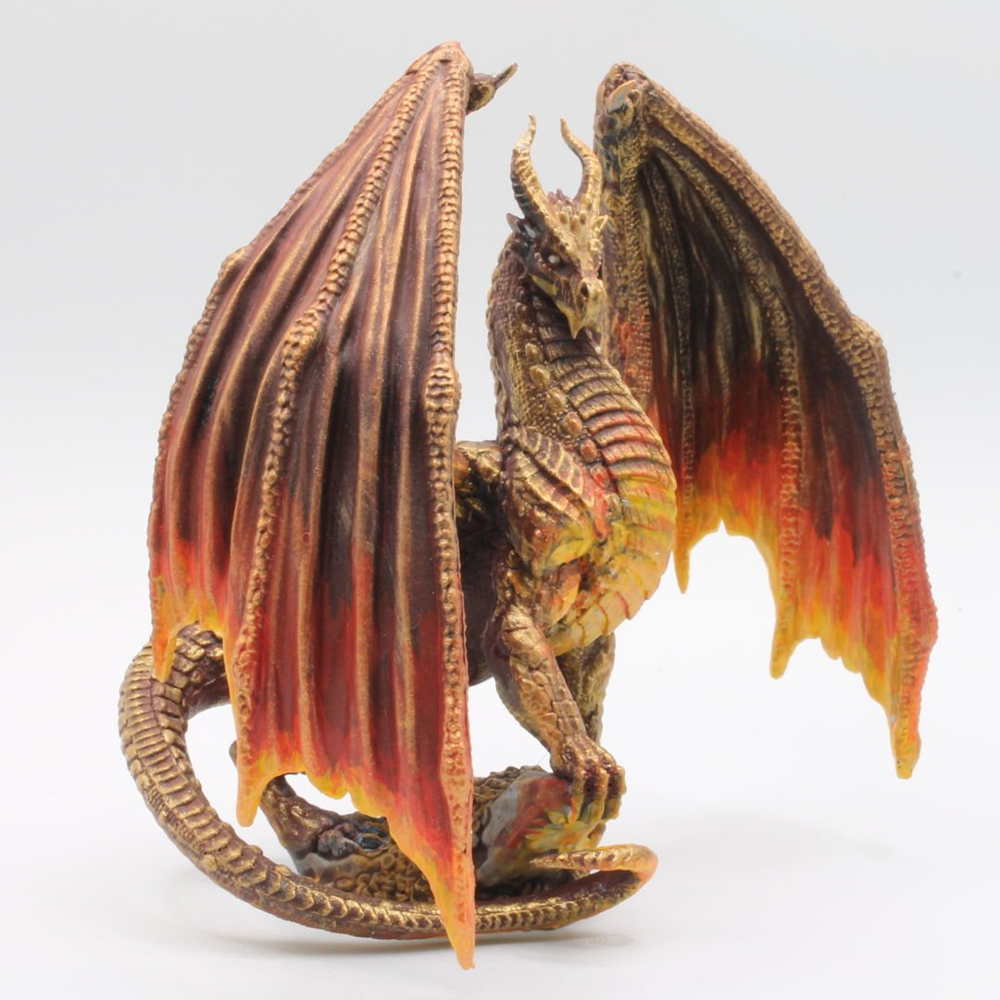
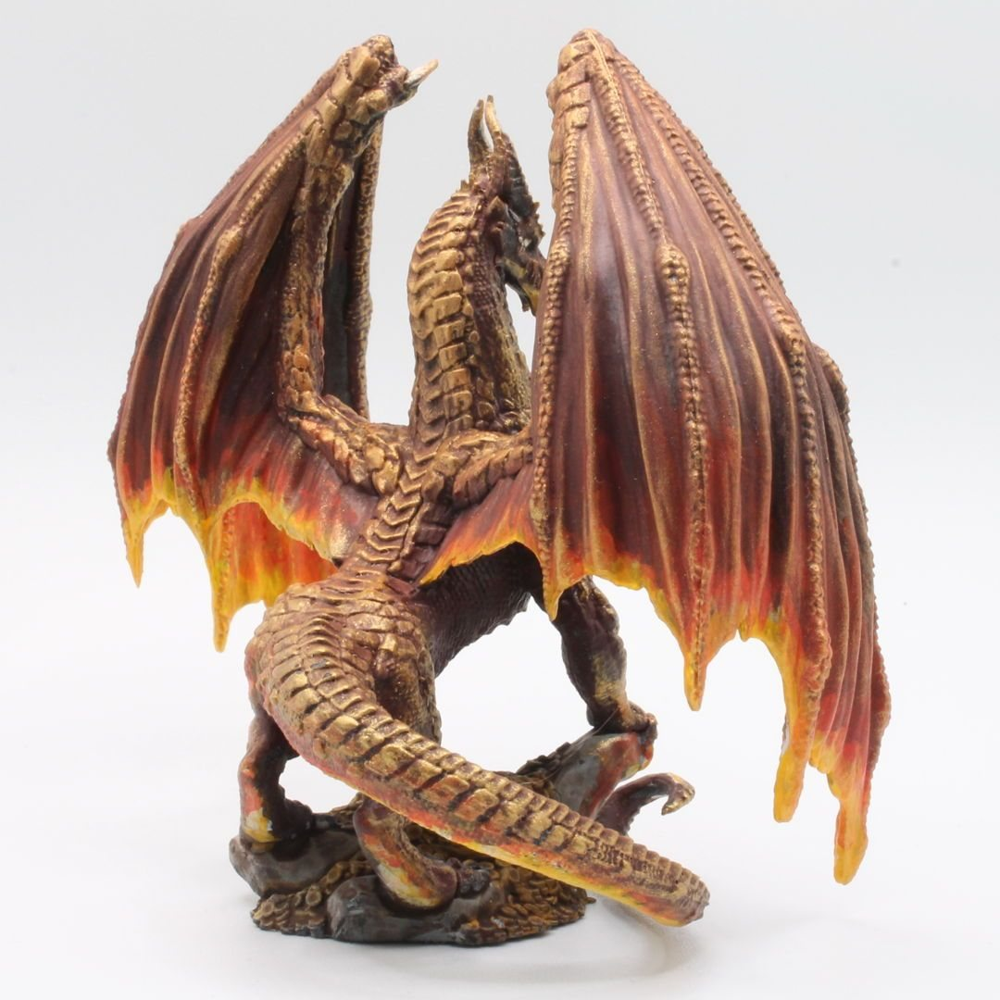
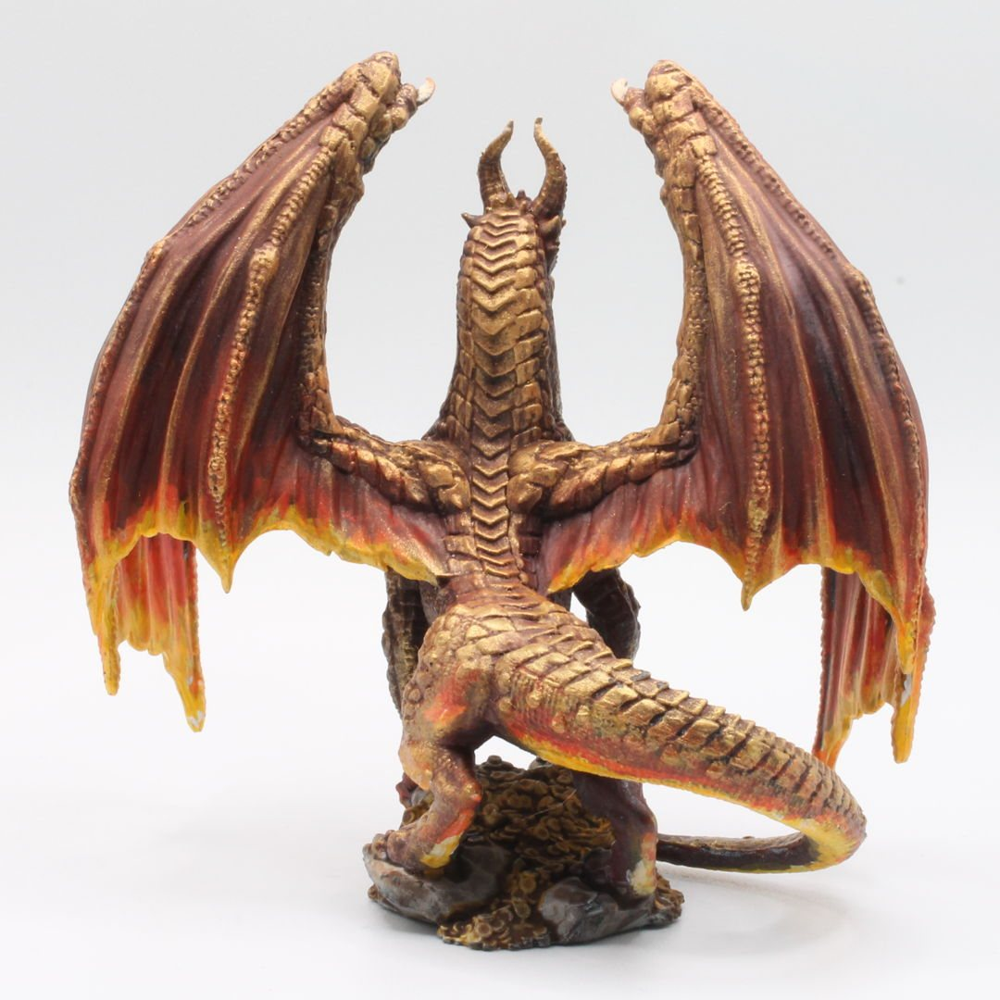
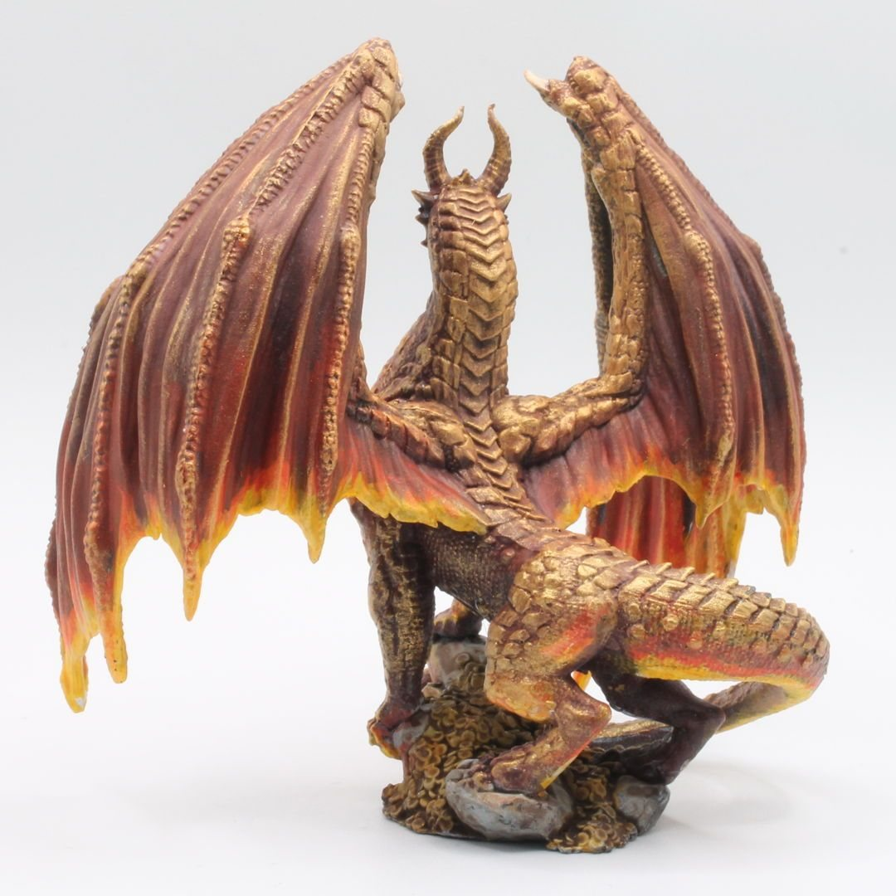
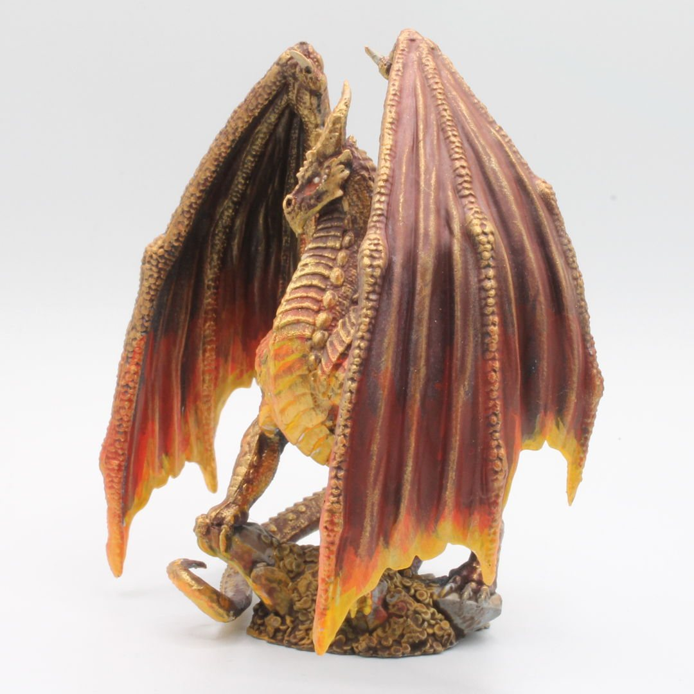
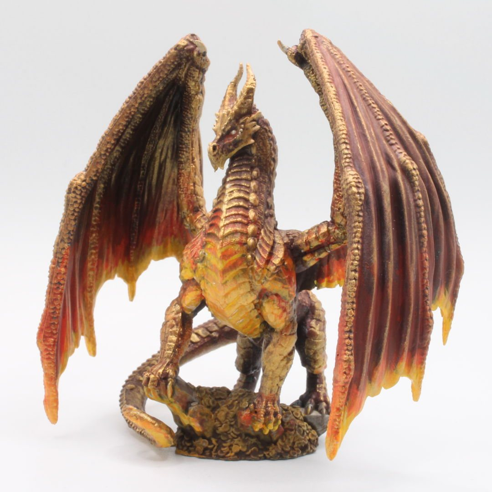
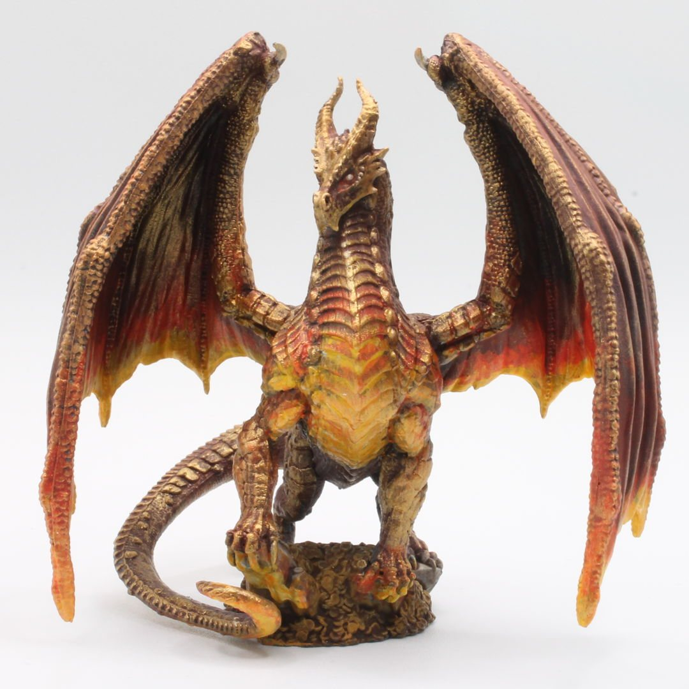

Villentretenmerth
🔥 "Tell me, witcher—have you ever heard a dragon speak?" 🔥
Villentretenmerth is one of only two known golden dragons in the history of the Continent. He loved living among other creatures and, being highly skilled in polymorphism, could assume many forms, allowing him to travel incognito. One of his most well-known forms was that of Borch Three Jackdaws
I had a blast painting up this mini, working on those shimmering gold scales and bringing out the noble, ancient power in his sculpt. This one was all about the glow. I built up about 7 layers of drybrushing, moving from deep crimson to golden highlights to capture that aged, heat-kissed scale texture. Then I layered on lighting effects around the chest and wings to push that inner fire vibe—like the dragon is standing above a lava flow but also glowing from within.
One of the most rewarding minis I’ve painted—subtle shifts, glowing wings, and a touch of ancient power.
#MiniaturePainting #TheWitcher #PathOfDestiny #Villentretenmerth #ThreeJackdaws #FantasyMiniatures #Drybrushing #LightingEffects #BoardGames #PaintingDragons #GoldDragon #TabletopGames #SinistrousMiniChronicles #Hobbies #Art